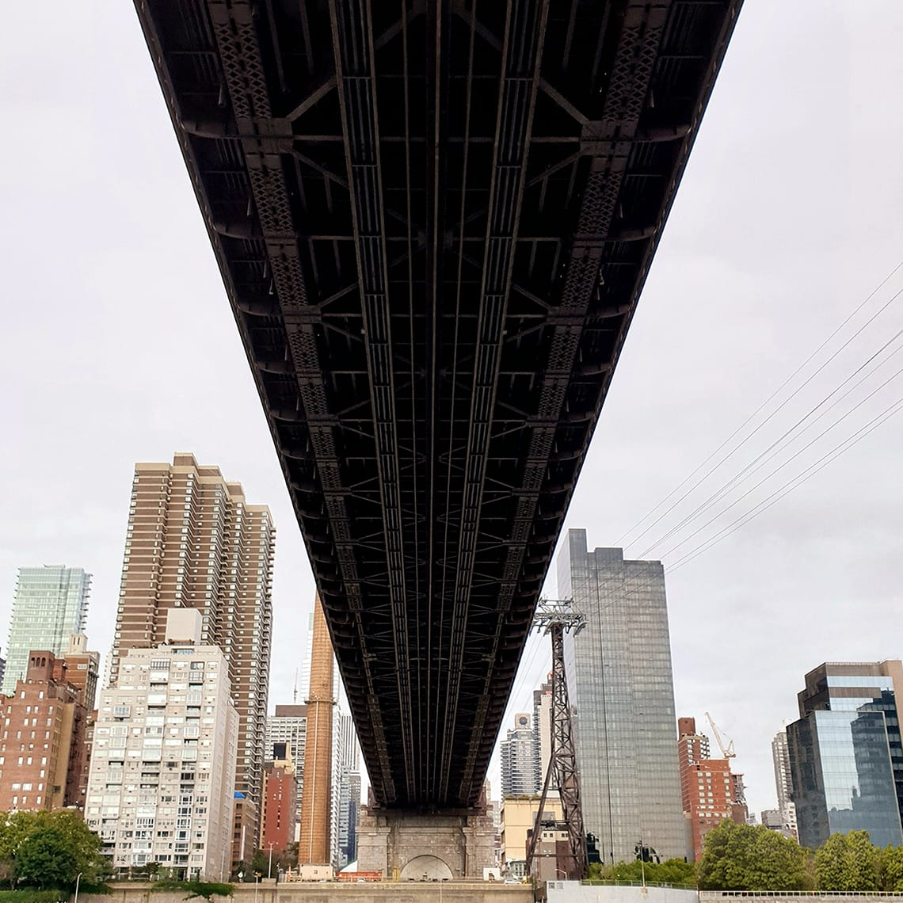
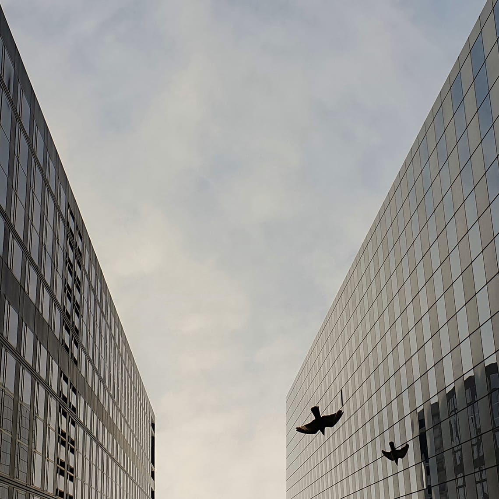

Take your photography to the next level with photo tips. This week, learn how to create The Perspective Effect with your Galaxy Note9.
Point your camera to the sky
Go under an impressive structure. Put your phone on Auto Mode and look up. Use the sky to frame your subject. Then tap to focus and take your shot.

See a new side of your city
Stand under a bridge. Point your camera toward the other side. Tilt it so the bridge and frame touch. Tap the bridge to expose the detail. Then take the shot.

Find the beauty in the spaces
Aim your camera up between two buildings. Find a symmetrical composition. Before taking your shot, align it. Just tap the gear icon on the top right. Then, choose Grid lines > 3x3